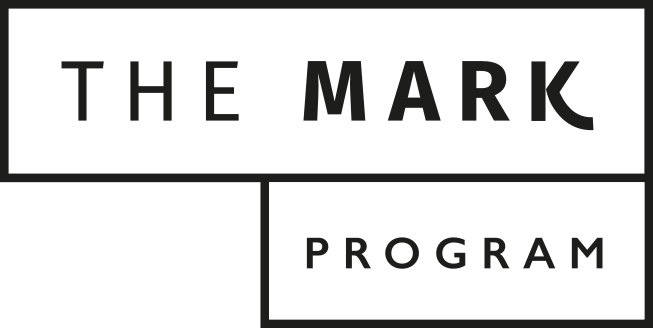

Actividades

Entrenamiento de Fútbol
Próximamente
Club juvenil en Guatemala, un espacio seguro, formativo y dinámico para jóvenes de 14 a 22 años que desean crecer personal y académicamente.
En Club Tucán, trabajamos por la formación integral de cada joven
Métodos y técnicas que mejoran el rendimiento académico y el aprovechamiento del conocimiento.
Un ambiente donde se construyen amistades auténticas y duraderas basadas en valores compartidos.
Práctica de actividades deportivas y desarrollo de intereses positivos que enriquecen la vida.
Desarrollo del pensamiento solidario y fortalecimiento de virtudes humanas fundamentales.
Aprender a aprovechar positivamente el tiempo libre para el crecimiento personal.
Próximamente

The Mark Program es un programa formativo diseñado para ayudar a los jóvenes de Club Tucán a dejar huella en su vida académica, personal y social.
The Mark Program impulsa a cada joven a descubrir su potencial, fortalecer su carácter y asumir compromisos que impacten positivamente en su familia, sus amigos y la sociedad.
Más que un programa, es una experiencia que busca formar jóvenes con visión, iniciativa y valores sólidos.
Más informaciónOfrecemos actividades orientadas a fortalecer la vida cristiana de manera libre. La labor doctrinal y espiritual ha sido confiada a la Prelatura del Opus Dei, institución de la Iglesia Católica.
Completa el formulario y nos pondremos en contacto para brindarte más información sobre Club Tucán y sus actividades.